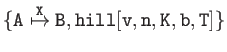
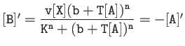
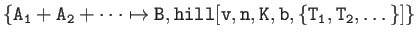
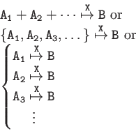

Catalytic Hill Functions
Syntax


Syntax


Snicker Snack 2012-08-31
![\begin{displaymath}
\begin{array}{l}
{\tt [B]'=\dfrac{v[X](b+T_1[A_1]+T_2[A_2]+\...
...cdots)^n}}\ \\
{\tt [A_1]'=[A_2]'=\cdots = -[B]'}
\end{array}\end{displaymath}](img54.png)